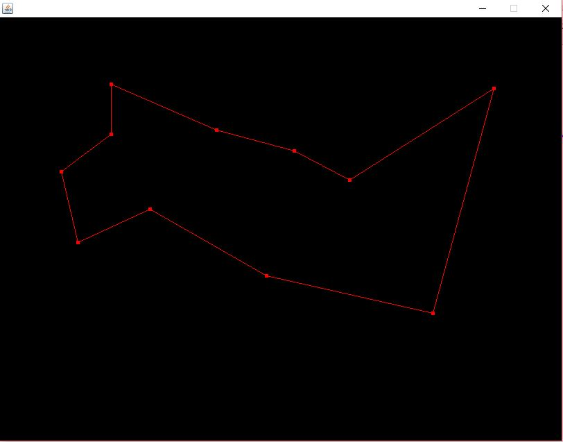
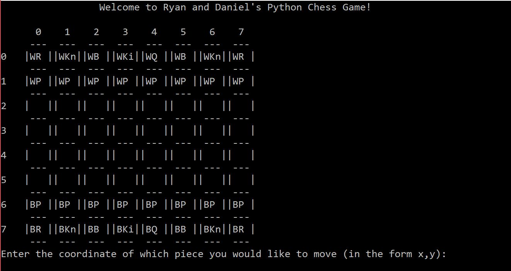

Hello, my name is Daniel Swikert and this site is a collection of of my projects that I have been involved in either from a class or some independent learning. I am a University student studying Computer Science/Computer Engineering. I have some experience in C, C++, Java, Python, SQL, Ruby on Rails, R, HTML, CSS, Javascript. Though of those languages my strongest skills are in C, C++, and Java.

